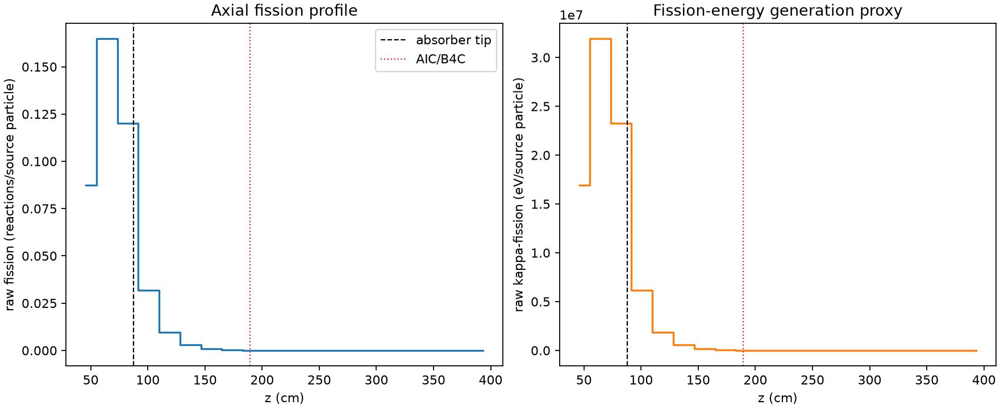
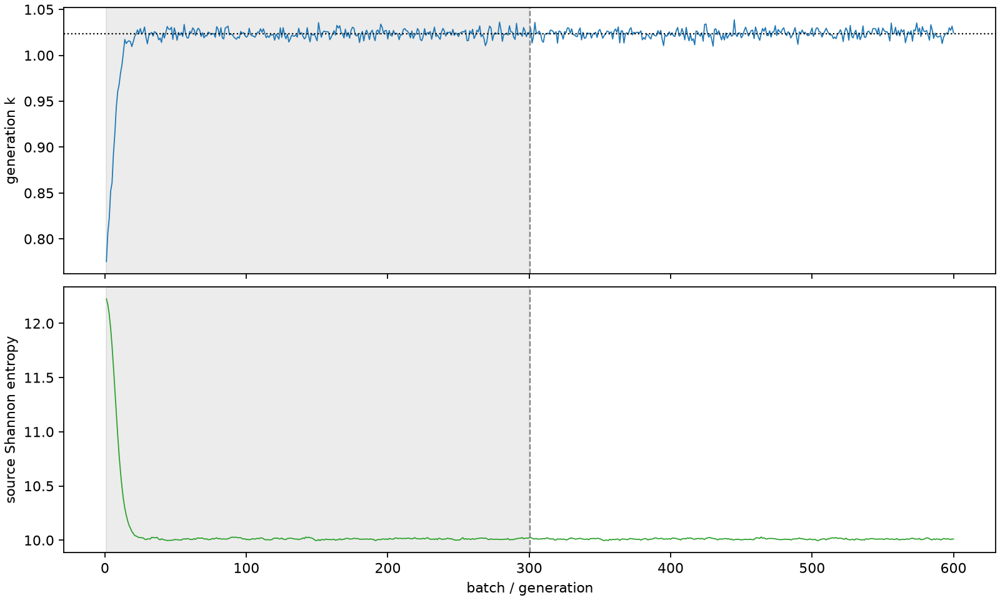

| field | value |
|---|---|
| experiment | V2-STAGE_128_OGRENCI_03-0013 |
| k | 1.023793390441504 |
| MC standard error | 0.0001858304622629424 |
| seconds | 927.3573088240009 |
| acceptance | not_assessed |
| convergence | review_required |
Completed is output integrity only; physical and statistical review required. Zero tallies do not prove zero production or zero uncertainty.
| diagnostic | value |
|---|---|
| geometric fuel voxels | 5280 |
| zero fission tally voxels | 1775 |
| low signal fuel voxels | 2948 |
| low signal fission share | 9.459331861008046e-05 |
| low signal kappa share | 9.461880397120915e-05 |
| important fission share | 0.9502580369342544 |
| previous filter included | 2332 |
| duration estimate s | 1562.5173488400023 |
| actual minus estimate s | -635.1600400160014 |
| fission relative MC error | statistics |
|---|---|
| all_geometric_fuel | {"voxels": 5280, "positive_mean_voxels": 3505, "zero_mean_voxels": 1775, "undefined_relative_error_voxels": 1775, "median": 0.05413486432468072, "p95": 1.0, "maximum": 1.0000000000000002} |
| low_signal | {"voxels": 2948, "positive_mean_voxels": 1173, "zero_mean_voxels": 1775, "undefined_relative_error_voxels": 1775, "median": 0.6086666301849428, "p95": 1.0, "maximum": 1.0000000000000002} |
| important_95pct | {"voxels": 986, "positive_mean_voxels": 986, "zero_mean_voxels": 0, "undefined_relative_error_voxels": 0, "median": 0.004986750055065295, "p95": 0.008914976778233542, "maximum": 0.009894759756037765} |
| outside_previous_filter | {"voxels": 2948, "positive_mean_voxels": 1173, "zero_mean_voxels": 1775, "undefined_relative_error_voxels": 1775, "median": 0.6086666301849428, "p95": 1.0, "maximum": 1.0000000000000002} |
| kappa_fission relative MC error | statistics |
|---|---|
| all_geometric_fuel | {"voxels": 5280, "positive_mean_voxels": 3505, "zero_mean_voxels": 1775, "undefined_relative_error_voxels": 1775, "median": 0.05404707054231071, "p95": 1.0, "maximum": 1.0000000000000002} |
| low_signal | {"voxels": 2948, "positive_mean_voxels": 1173, "zero_mean_voxels": 1775, "undefined_relative_error_voxels": 1775, "median": 0.608603495766366, "p95": 1.0, "maximum": 1.0000000000000002} |
| important_95pct | {"voxels": 986, "positive_mean_voxels": 986, "zero_mean_voxels": 0, "undefined_relative_error_voxels": 0, "median": 0.004980412232512645, "p95": 0.00890234894988706, "maximum": 0.009879354720370317} |
| outside_previous_filter | {"voxels": 2948, "positive_mean_voxels": 1173, "zero_mean_voxels": 1775, "undefined_relative_error_voxels": 1775, "median": 0.608603495766366, "p95": 1.0, "maximum": 1.0000000000000002} |
| axial bin | fission share | kappa-fission share |
|---|---|---|
| 1 | 0.20941307665570355 | 0.20941081396879105 |
| 2 | 0.3945688260377301 | 0.3945442041865152 |
| 3 | 0.28744306648617307 | 0.28743782663718676 |
| 4 | 0.07619810306962269 | 0.07622041993661603 |
| 5 | 0.022685413727650684 | 0.022692224834698373 |
| 6 | 0.006778535989936103 | 0.006780640773438782 |
| 7 | 0.002061258281159464 | 0.0020618759343936956 |
| 8 | 0.0006109318106512015 | 0.0006111308298319422 |
| 9 | 0.00017573582719423382 | 0.00017579063991985704 |
| 10 | 4.695089863033237e-05 | 4.696380510637568e-05 |
| 11 | 1.2298192162441661e-05 | 1.23033563579939e-05 |
| 12 | 4.3067322753106486e-06 | 4.3082667563879386e-06 |
| 13 | 1.1221691008796e-06 | 1.1224768287980156e-06 |
| 14 | 1.5316605581595075e-07 | 1.5344633605664968e-07 |
| 15 | 2.1043306047382888e-07 | 2.1033951136853545e-07 |
| 16 | 6.3856794553077314e-09 | 6.4352140318568965e-09 |
| 17 | 4.137214271861127e-09 | 4.132497274403025e-09 |
| 18 | 0.0 | 0.0 |
| 19 | 0.0 | 0.0 |
| 20 | 0.0 | 0.0 |
Histories include the inactive-to-active transition at batch 300. kappa-fission approximates fission energy production, not total heat deposition.

